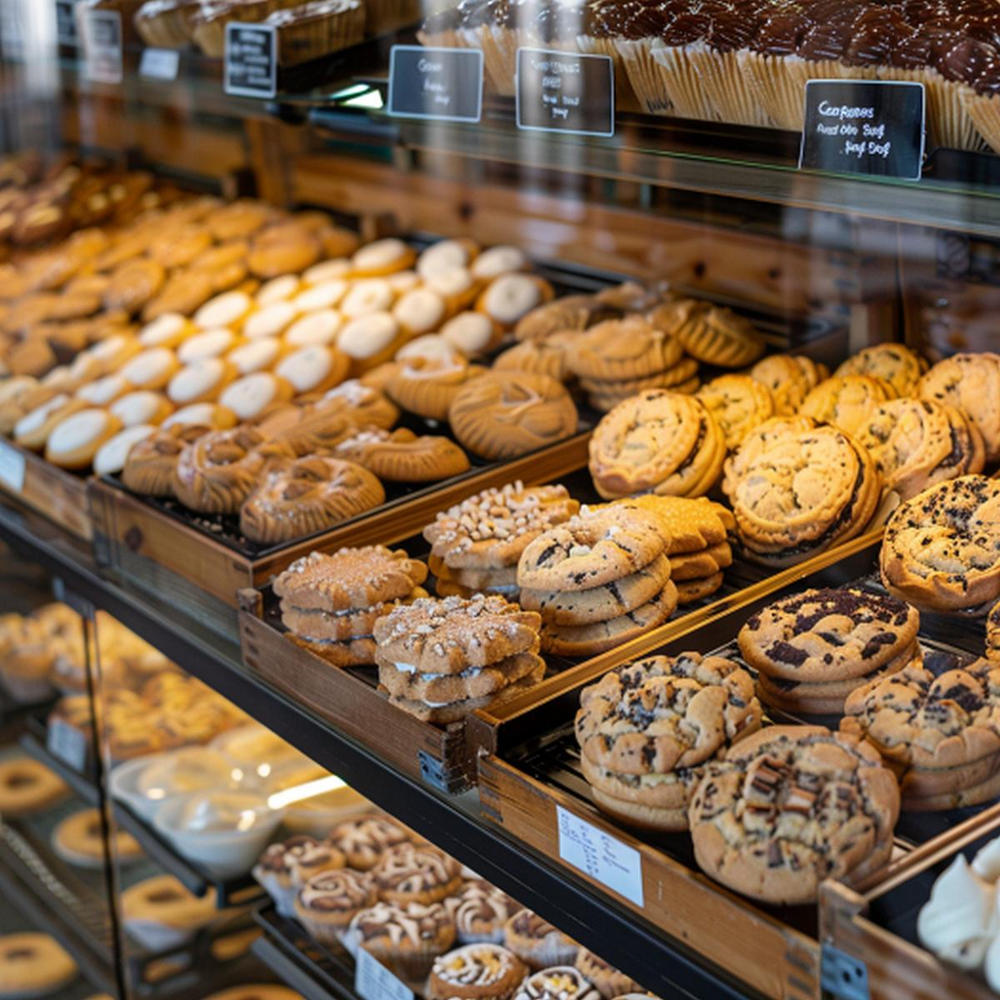

A Warm Welcome from Our Oven to Your Table
North Star Bakery is your neighborhood bakery, where every loaf and pastry is made by hand each morning for local families, commuters, and celebrations of every size.
Press play to hear a short welcome from our bakers.
What We're Known For
- Slow-fermented sourdough and seeded country loaves
- Buttery pastries and cookies baked in small batches
- Custom cakes and bread orders for events and gatherings
Featured Item of the Week: Bakery Case Cookies

This week's cookie tray is stocked with chocolate chip, sprinkle-topped sandwich cookies, and glazed rounds. Pre-order a dozen for the office or a family gathering.
Hours and Location
North Star Bakery, 123 Main Street, Your Town, VA 00000
Tuesday to Friday, 6:30 AM to 5:00 PM. Saturday and Sunday, 7:00 AM to 3:00 PM. Closed Monday.